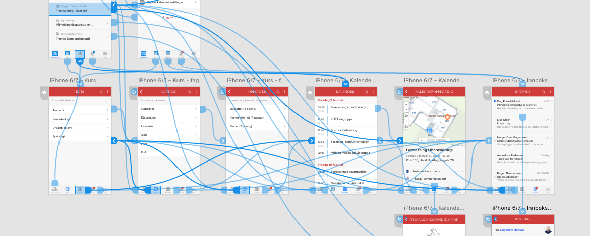

{{> header}}

<div class="article-wrapper">


    <h5>Method</h5>

    <h1>Prototype</h1>

    <h2>A prototype is an interactive model of a product. It includes a flow of screens and a sequence of actions needed to reach a desired goal.</h2>

    <div class="article-image">
        <div class="article-image-element">
            
              <div class="article-image-overlay">
                  <!--<h2><span class="highlight">Focus group meeting at Norwegian Maritime Authority where we discussed the certification needs of ship owners, ship builders and seafarers</span></h2>-->
              </div>
        </div>
    </div>


    <div class="article-text">

        <p>The goal of a prototype is to be an interactive model that demonstrates for all involved parties how a product will work, when finished. It may be low fidelity using hand-sketched drawings. It may be made in a digital tool like Axure, using a simple wireframe design. Or it may be a digital solution with a completely realistic and finished design. It may even be coded in HTML/CSS/Javascript - but missing the backend database implementation.

        </br></br>
        The point of a prototype is to specify and detail how we plan that the end product will work and also to a large extent how it will look and feel for the end user. It's also a visual and functional specification to be used by developers and testers during the realization of a product.

        </br></br>
        Today most digital product prototypes are made to adapt to the screens they appear on. The fact that mobile devices are taking over from the desktop computers, means that the need to prototype has never been more crucial.

      </p>

    </div>

</div>


{{> footer}}
